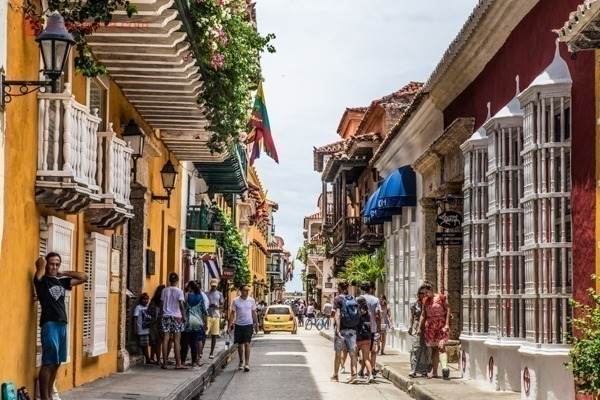

Fernando de Noronha
Não existe lista de destinos mais bonitos do mundo sem a presença
brasileira, já que há vários lugares bonitos para viajar no Brasil. Um
deles é Fernando de Noronha, um arquipélago do nosso país que pertence
ao estado de Pernambuco. Esse local conta com várias ilhas e praias que
são consideradas as mais incríveis do país. Contudo, a Praia do Sancho é
classificada como a mais bonita do arquipélago. Ela possui águas claras
e cristalinas e é cercada por rochas e por uma vegetação rica.
Para mais informações sobre preçosAcesse!
.jpg)
Lago Peyto, Canadá
De acordo com a Ciência, este é o lugar mais bonito do mundo. O Lago
Peyto, localizado no Parque Nacional de Banff, no Canadá, abriga uma
natureza exuberante e paisagens de tirar o fôlego. O Lago Peyto tem
águas azuis cristalinas e é rodeado por montanhas e uma floresta nativa.
Além de admirar a bela vista, também é possível fazer algumas atividades
nesse local, como acampar, caminhar, andar de caiaque e pescar.
Para mais informações sobre preçosAcesse!

Cartagena, Colômbia
no litoral da Colômbia, e banhada pelo mar do Caribe, Cartagena é um dos
lugares mais bonitos do mundo. A cidade abriga muitas construções e
monumentos históricos, que surpreendem por sua beleza. Cartagena é
conhecida por ter muitas construções coloridas, que deixam a cidade
ainda mais bonita. Entre os pontos mais bonitos desse local estão o
centro histórico de Cartagena, que é um museu ao ar livre, e a Torre do
Relógio..
Para mais informações sobre preçosAcesse!